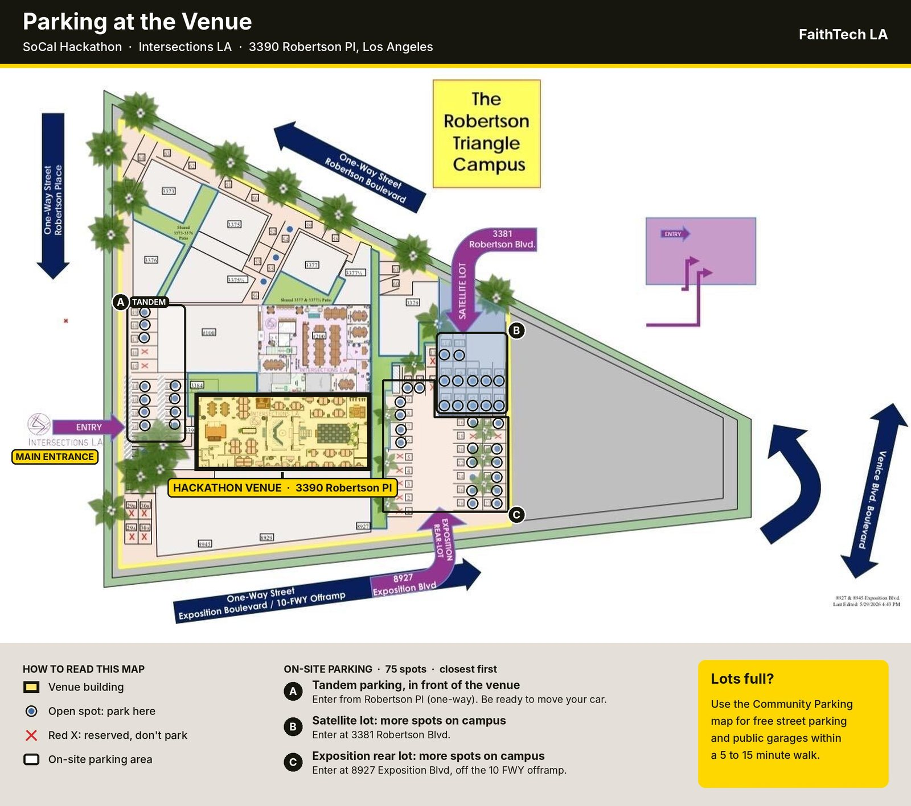
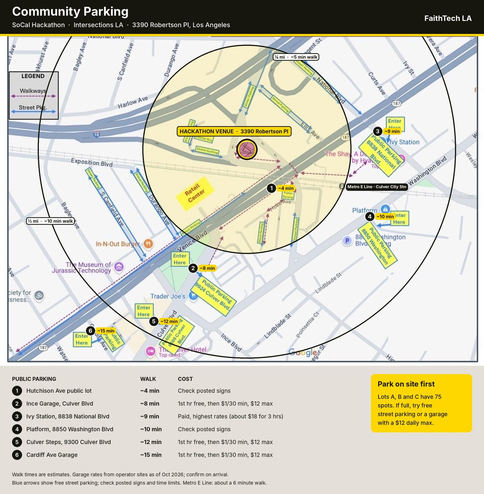

FaithTech SoCal × Baptize The World Hackathon hub
FaithTech SoCal × Baptize The World Hackathon
One day to build for the global church
Sat 24 Oct 2026 · 9:00 am – 6:00 pm · The Robertson Triangle, 3390 Robertson Pl, Los Angeles
Agenda
- 9:00 AMDoors, check-in and breakfast
- 9:15 AMWorship
- 9:30 AMWelcome and overview
- 9:45 AMMeet Baptize The World
- 10:00 AMHonors, mentors and judging
- 10:05 AMForm teams
- 10:25 AMSet up Pathfinder
- 10:30 AMLament together
- 11:00 AMDiscern together
- 12:00 PMLunch
- 12:30 PMBuild starts
- 2:00 PMPrayer pause
- 3:00 PMSteward and demo prep
- 4:00 PMCode freeze
- 4:15 PMDemos
- 5:00 PMGroup photo, giving and feedback
- 5:15 PMTeam honors
- 5:30 PMNext steps and commissioning
- 6:00 PMDoors close
Where
- Venue
- The Robertson Triangle, 3390 Robertson Pl, Los Angeles, CA 90034
Breakfast at 9:00, lunch at 12:00. Coffee and snacks all day.
Parking
Park on site first. Lots A, B and C have 75 spots, closest first. If they’re full, try free street parking or a garage with a $12 daily max.

On site · 75 spots
Lot A is tandem parking in front of the venue: enter from Robertson Pl and be ready to move your car. Lots B and C have more spots on campus, entered at 3381 Robertson Blvd and 8927 Exposition Blvd.

Nearby garages
Free street parking and six public garages are a 5 to 15 minute walk. Most give the first hour free, then $1 per 30 minutes, with a $12 daily max.
What to bring
- Your laptop and charger
- Your phone, for testing and demos
- A GitHub account and your username, for your team’s public repo
- Logins for the AI and dev tools you like to use
On the day
- Raise a hand
- Candid photos
- Close the loop
Partners
A global movement uniting churches in baptism. Pentecost is the global day of baptism, and every track today serves that mission.
- Baptize The World
Tracks
- Track 1 · Primary focus
Mobile-first church onboarding
How might we help a pastor anywhere register their church, get resources and report baptisms from the phone they already use, on any connection and in their own language, so every baptism on Pentecost 2027 gets counted?
- Track 2
Testimony sharing
How might we help someone who was just baptized tell their story in their own words and share it, without anyone at their church having to produce it, so that one baptism invites the next?
- Track 3
Post-baptism discipleship
How might we help local churches walk a newly baptized person through their first 30 days of following Jesus, so they keep growing and stay rooted in that church?
What good looks like
- In their language
- On the phone they have
- Done in one sitting
- Ready by Pentecost
The Create Cycle
Redemptive technology starts before the code. Every team moves through the same four movements, and your team works through each step in Pathfinder.
- 10:30 to 11:00
Lament
We patiently refuse to rush past pain.
- Listen
- Who does your track serve? Whose pain have you heard?
- Remember
- Name the pain honestly. Who’s left out, and why?
- Repent
- What in us needs to change?
- Rejoice
- Where have you already seen God at work?
- 11:00 to 12:00
Discern
We seek God’s wisdom before choosing a response.
- Ideate
- Get every idea out. No critique yet.
- Map the path
- Clarify the scope and what you hope to build today.
- Choose a direction
- Reject, receive, reimagine or create?
- 12:30 to 4:00
Build
We faithfully build in dependence on the Spirit.
- A rhythm, all afternoon
- Pray, prototype, pause. Repeat.
- Prayer pause at 2:00
- Is this still what we discerned? Are people being loved well?
- Hebrews 11:3
- To create is an act of faith.
- 3:00 to 4:00
Steward
We take responsibility for what we release.
- Tend
- Show it working, live.
- Examine
- The fruit and the risks.
- Testify
- What God did in your team.
Rules
- Start fresh
- Any stack
- Test data only
- Credit your sources
- Code freeze at 4:00
- Public repo
Use a public repo on your own GitHub account. If your team wants its repo in FaithTech’s GitHub org, ask Travis or Jesse to add you, and have your GitHub username ready.
People
Mentors
- Arren Bustamante
- Dana Calit
- Travis Johnson
Judges
- Holly Dunlap
- Pastor Calin
- Jesse Eshleman
Submission and feedback
Code freeze at 4:00 PM
Demo format
Three minutes per team, then two minutes of questions.
- 0:00 to 0:30Your track
- 0:30 to 2:00Tend
- 2:00 to 2:30Examine
- 2:30 to 3:00Testify
Tips
- Demo on a phone
- Have a backup video
- Start with a person
Judging and honors
Judges score each team 1 to 5 on each criterion. Redemptive potential carries 40% of the score, and the other two carry 30% each.
| Number | Criterion | The question | Scores a 5 when |
|---|---|---|---|
| 01 | Redemptive potential (40%) | Could this advance the gospel and reach real people, beyond the demo? | Real people could meet, follow or share Jesus through it long after today. |
| 02 | Usable by the end user (30%) | Could a pastor, a new believer or a church volunteer use it without us in the room? | A pastor or volunteer could pick it up today with no help. |
| 03 | Technical viability (30%) | Does it work live, end to end, and could it fit into Baptize The World’s tech stack? | It runs live, end to end, and could plug into Baptize The World’s tools. |
Honors
- Honor 01 · Top score
Most Redemptive
Deployable and ready for impact: viable, and built in the way of Jesus.
- Honor 02 · Mentors’ pick
Most Collaborative
Built best together. Every member shaped the work.
- Honor 03 · Judges’ pick
Most Creative
The most imaginative answer to the challenge.
Winning teams take home bags of coffee and a certificate.
Worship
Three songs, about 15 minutes, to start the day. Lyrics will be on screen in the room.
- Listen ahead to Holy Forever (new tab)Holy Forever
- Listen ahead to What a God (new tab)What a God
- Listen ahead to Make Room (new tab)Make Room
Slides
Use the left and right arrow keys, or pick a thumbnail.